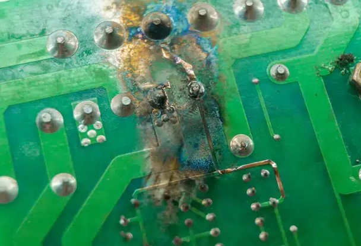
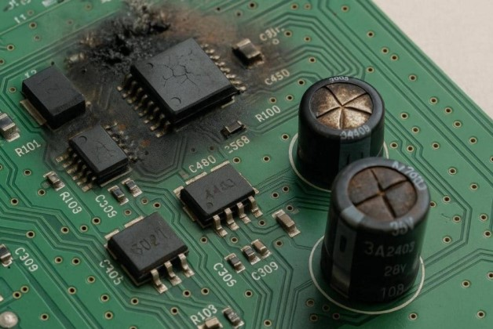

How ESD Damages Electronics & Failure Mechanisms
A discharge that never trips a fuse can still end a product's life. Understanding exactly how nanosecond-scale current damages silicon -- immediately or months later -- is what turns an ESD failure report into a real design fix.


Not every ESD event leaves physical damage. A transient can simply corrupt a signal or state without harming any component -- these are the symptoms that performance criteria B and C (Module 04) are designed to capture.
| Symptom | Likely mechanism |
|---|---|
| Microcontroller reset / reboot | Transient coupled into the reset pin or brown-out detector tripped by a supply-rail glitch |
| Frozen or corrupted display | Bit-level corruption in a serial display interface (SPI/I2C) with no CRC/retry |
| Dropped USB / peripheral connection | PHY-level bit errors or ESD-induced enumeration fault |
| False touch/button trigger | Transient coupled into a capacitive-touch or GPIO input |
| Communication bus error / dropped packet | Common-mode transient exceeding a transceiver's common-mode range momentarily |
| Data corruption in non-volatile memory | Write cycle interrupted mid-operation by a reset or brown-out during the event |
Module 7 Quiz
Select the best answer for each question. Instant feedback is provided after each response.